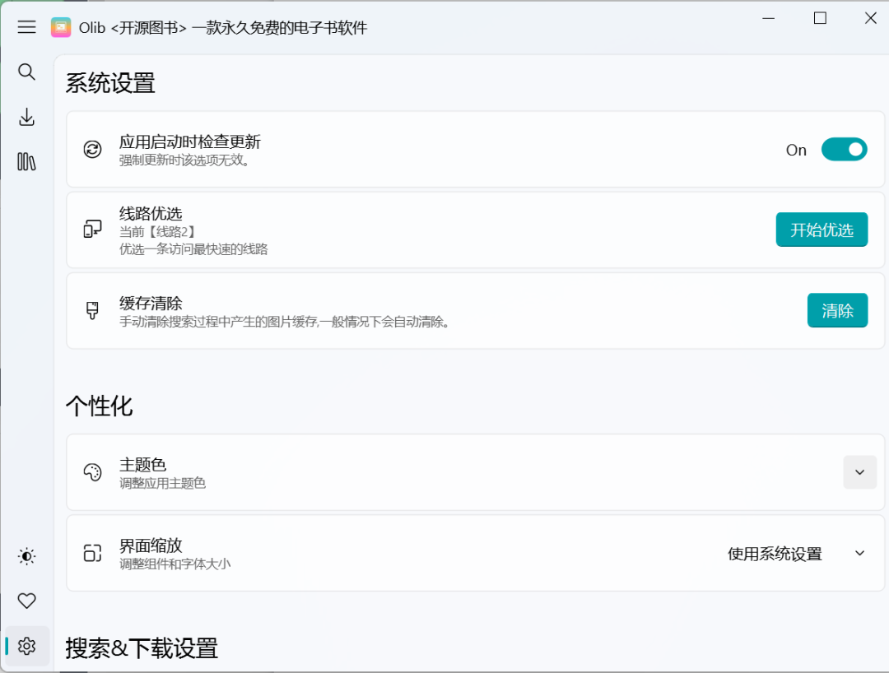
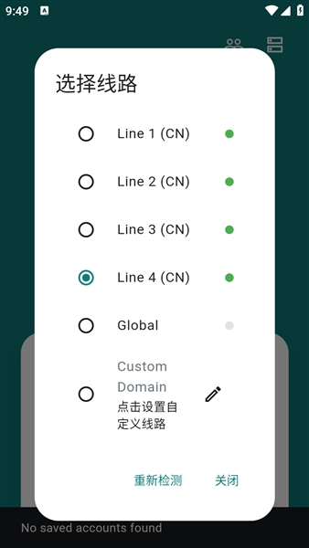

Olib 线路优选背后：为什么一个 Z-Library 客户端要自己测连通性
从 Python 到 Flutter 双端原生开发，Olib 的线路优选、多账号轮换这些功能看似简单，背后藏着 Z-Library 生态里特有的技术困境和设计取舍。
我第一次接触 Olib 是在它的官网上，第一次用的时候没觉得它有多特别——搜书、点下载、等进度条走完，和其他同类工具没什么区别。直到有一天在不同网络环境下反复折腾线路时，我才开始好奇：为什么一个电子书下载器，要内置一套自己的连通性检测逻辑？ 直接请求 API 不行吗？
这不是一个随便的功能堆砌问题。Olib 背后的核心矛盾，是 Z-Library 这类资源站天生不稳定的基础设施环境。线路优选、多账号轮换、双端原生开发——这些看上去分散的功能，其实是开发者拾壹0x7f 在同一个问题下做出的连锁反应。让我把这套设计拆开看。
问题：Z-Library 的基础设施困境
先理解 Olib 要解决什么。Z-Library 不是 Amazon 或 Google Play 那种有稳定 CDN 和全球节点的商业服务。它的域名会变、入口会换、不同地区的网络可达性差异极大。一个在欧洲能秒开的镜像站，在中国可能连 DNS 解析都过不去。
这就产生了一个刚需：用户手里的客户端不能只写死一个域名，必须有多条备选线路。但有了备选还不够——你不知道哪条在当前网络下能用、哪条最快。直接挨个试？那意味着用户点一次搜索，可能要等十几秒超时才换到下一条线路。
Olib 的线路优选就是为了解决这个痛点而生的。它的做法很直白：依次对每条内置线路发请求，测三个指标——连通性（能不能建立连接）、响应速度（延迟多少毫秒）、API 可用性（能不能正常调用搜索和下载接口）。检测完给每条线路一个评分，让用户一眼就能看到哪条当前最好。

拆解：检测逻辑的技术细节
Olib 没公开线路优选的源码细节，但从实际使用行为反推，这套检测机制有几个值得注意的设计选择。
首先，它不是简单的 HTTP ping。如果只是发一个 HEAD 请求看端口通不通，很可能出现"域名能访问但 API 返回 503"的情况——Z-Library 的前端静态页面和后端 API 可能分布在不同节点上。Olib 把 API 可用性作为第三个独立检测指标，说明开发者意识到了这个分层问题：线路"活着"和线路"能用"是两回事。
其次，Android 端和 Windows 端的检测结果呈现方式不同。Windows 端跑完后会给出"优选一条访问最快的线路"的建议，甚至部分版本能自动切换；Android 端则用绿点和灰点直接标记可达/不可达。这个差异不是随便做的——我猜是因为 Flutter 的跨平台网络请求库在不同 Android 版本上的超时行为不完全一致，用简单的可达性判断比精确测量延迟更可靠。
还有一个容易被忽略的细节：每次检测的超时窗口不会太长。线路优选整个过程是几秒到十几秒，不可能给每条线路留几十秒的超时等待。这意味着它用的是 aggressive timeout 策略——宁可过早判定一条慢线路"不可用"，也不让用户在检测上浪费时间。对一个资源站客户端来说，快速给出一个够用的答案，比精确测量每个节点的真实延迟更重要。你如果想亲自跑一遍这个检测逻辑，从Olib下载页拿个客户端就能体验。
取舍：手动轮换 vs 自动轮换
多账号轮换是另一个有意思的设计。Z-Library 免费账号每天 10 次下载额度，注册 3-5 个账号就能把额度翻到 30-50 次。Olib 支持保存多个账号并一键切换，但它不做自动轮换——账号 A 用完了要手动切到 B。
这背后有一个很实际的取舍。自动轮换看起来更方便，但实现起来要解决一堆边缘问题：下载任务在切换时要不要中断？切完之后正在下载的文件续传能接上吗？如果所有账号同时到达额度上限，客户端该怎么提示用户继续等第二天？
手动轮换把这些状态管理的复杂度甩给了用户自己，换来的是客户端代码逻辑的简洁和可靠性。开发者拾壹0x7f 在Olib文档里明确说"可能在未来版本加入自动轮换"，但从目前 v2.4.x 和 v1.0.x 的迭代节奏来看，这个功能还在优先级排队中——Bug 修复和线路更新永远排在新功能前面。
这个优先级本身就是一种取舍判断。在 Z-Library 的生态里，线路挂了比新功能缺失更致命。用户不会因为没有自动轮换而卸载，但如果搜索不了、下载不了，那客户端就只是个空壳。
判断：这套原理意味着什么
把上面的设计逻辑串起来看，Olib 的核心设计哲学其实可以用一句话概括：在不稳定的基础设施之上，给用户一个尽量稳定的使用体验。线路优选、手动多账号、双端独立开发，都是为了服务这个目标。
那么这套原理适合什么、不适合什么？
适合的场景很明确：你是一个偶尔下载电子书的个人用户，网络环境可能在 WiFi 和移动数据之间切换，对"能不能搜、能不能下"比"能不能全自动"更关心。Olib 的手动切换虽然不如自动轮换优雅，但胜在可靠和可预期——你知道自己在做什么，出了问题也容易定位。
不太适合的场景也同样清楚：如果你需要批量下载大量书籍，希望全程无人值守，Olib 的手动切换会让流程变得很笨重。而且 Z-Library 的额度限制本质上没被绕过——只是被 3-5 个账号平摊了。真有大量下载需求的人，赞助 Z-Library 会员可能是更高效的选择。
还有一点值得单独提：双端原生开发的维护成本。Windows 端用 Python，Android 端用 Flutter，两套代码意味着开发者每次更新要改两份、测两遍。这也是为什么你在版本记录里经常看到"线路更新"和"Bug 修复"，但大功能不常见——双端同步迭代本身就是很重的负担。开发者选择这套技术栈，很可能是出于个人技能栈的匹配（Python 写工具高效，Flutter 跨移动端体验好），而不是出于产品层面的最优解。
结语
回头看开头的问题：为什么一个电子书下载器要自己测连通性？因为它要活在一个不稳定的生态里，而稳定的体验是它唯一能提供的差异化价值。
Olib 不一定是功能最全的同类工具，但它在"线路优选"这件事上的投入，让它在实际可用性上胜过不少对手。这不是什么高深的算法，就是把一个明确的问题拆解成几个可解的小问题，然后逐个解决——连通性用 HTTP 请求测，响应速度用超时控制，API 可用性用真实调用验证。朴素，但有效。

这套资料在三个仓库都能拿到，GitHub 上有完整的 Windows Python 源码和 Android Flutter 源码，Gitee 和 GitCode 也同步维护着同样的文档目录，方便国内用户在不同代码托管平台上随时查阅和备份。